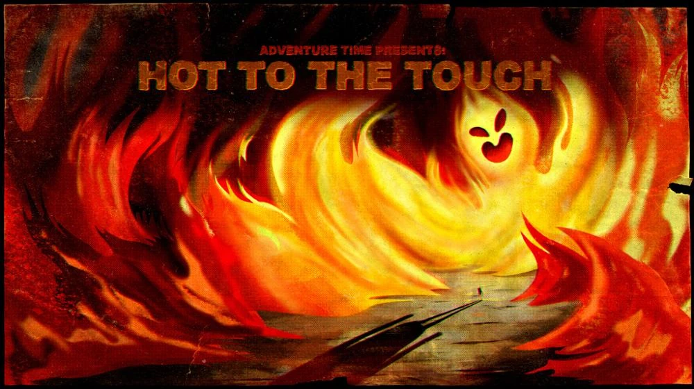

-

Sinopse:
As tentativas de Finn de provar para Jake que a Princesa de Fogo não é realmente má enquanto tenta conquistar seu coração se transformam em uma aventura para pará-la de destruir o Reino Goblin.
-
Sinopse:
Cuber, um ser cósmico, conta 5 histórinhas diferentes, para que adivinhemos o tema.